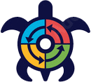

Welcome to OPTIMUS
Digital judgement and scoring system
OPTIMUS is all-in-one software suite developed for judging outdoor skydiving competitions. OPTIMUS offers low cost sulution for scoring Formation Skydiving, Artistic Events, Canopy Formation. It also includes functionality for Wingsuit Flying Performance.

What makes OPTIMUS unique
The idea of OPTIMUS is driven by goal - increase Quality of life (QoL):
- Easy to use
- User friendly multilangual interface, detailed documentation
- Customizable
- Ability adapt to individual requirements or terms of use; Flexable in confuguration;
- Zero-administration approach
- No installation, No specialised equipment is required; The system is designed to be run by you, independently of us
- Scalability
- suitable for competitions any size
- Affordable price
- Payment per discipline in the license; Free for individual use
- Promoting innovations
- Simplify work.
Subscription
A 1 year licence of OPTIMUS includes in each products subscription. Online orders are processed automatically 24/7.
 Individual
Individual
free version of the OPTIMUS:
- All features included;
- 365-days tech support from subscription's date;
- Try to use before pay;
- Implement your ideas into the system
- No advertising or nag-window
 Premium
Premium Technical Support
OPTIMUS offers tech support for customers with active subscription. During subscription period you will get:- free upgrades including new releases, bug fixes;
- Online check version, also you will get an E-Mail when a new OPTIMUS version is available;
- fast free technical support via e-mail for one year.
- 30 days before a subscription expires, OPTIMUS will send an email notification to alert you to the fact that a new subscription will need to be purchased. An email notification will then again be sent 14 days before a subscription expires.
Comparing Licenses
Стоимость подписки рассчитывается по количеству выбранных дисциплин. Можно выбрать любую комбинацию дисциплин из доступных;
| Premium | Individual | Free | ||
|---|---|---|---|---|
| Number of concurrent Judge's panels | up to 5* | 1 (singlemode) | 1 (singlemode) | |
| Online check updates | + | + | - | |
| + | - | N/A | ||
| Web Sync Scores | + | - | N/A | |
| Vanguard Upload Station | + | + | - | |
| Ferret autonomous judgment | + | + | - | |
| Zodiak Video Overlay Replays | + | + | - | |
| Subsciption Period | 1 year (365 days) | N/A | ||
| Regular Purchase Price | $200** per discipline | $0 (Free) | N/A | |
| Outdoor дисциплины | Formation Skydiving (FS), Canopy Formation (CF), Artistic Events Freeflying/Freestyle (AE), Formation Skydiving Speed (SF) | |||
| Generic Event Score Capture | Wingsuit Performance Flying (WP) | |||
| *Ограничивается лицензией, с Ferret неограничено **An Outdoor pack [FS, SF, AE] and indoor pack [DY, DS, IS] are available in $510 (15% off). Additional package items cost [IS, CF, WP] $170 each. | ||||
Bring your ideas to life
OPTIMUS provides the opportunity to participate in product development, adapt new improvements to personal requirements or conditions of use.
Beta-testing participants get Premium Subscription for free (for the selected discipline). Requires a separate license.
Already have a licence?
Renew now
Contact Our team to take part the program.
Frequently Asked Questions
- Для работы системы OPTIMUS и OSHD достаточно одного scoring computer, к которому подключаются все судейские консоли.
- Для Intime требуется в 5 раз больше оборудования, по сравнению с системами OSHD и OPTIMUS, т.к. каждая судейская консоль InTime запускается на отдельном компьютере.
- Консоли OSHD комплектуются изделием Matrix с убогим LCD-screen, что не сравнится с богатыми возможностями консолей OPTIMUS.
- Стоимость лицензии OPTIMUS определяется набором активных дисциплин и предоставляет значительные скидки за счет программ лояльности, в то время как лицензия InTime обходится в 10 раз дороже.
- OPTIMUS распространяется бесплатно для индивидуального пользования, также как и OSHD. У InTime однопользовательскую лицензию нужно покупать.
- В индивидуальной подписке доступны все поддерживаемые дисциплины, InTime express предлагает отдельные версии для некоторых дисциплин.
- В OPTIMUS результаты соревнований можно вставлять в любой сайт, InTime публикует только на своем портале. OSHD не имеет сайта вовсе.
- У всех систем имеются свои уникальные решения для оценки выступлений:
- InTime Online - cloud-based system operates via internet browsers; Организаторы экономят на проезде и проживании судей, оплачивается за оценку видео. Лишает судей возможности путешествовать, личной встречи и обмена опытом, получать удовольствие командной работы.
- OSHD может работать с консолями на клавиатурах, но корректировка оценок происходит поочереди на одном экране; Экономия на дурацких Matrix-девайсах. Можно применить для единичной оценки выступлений, но совершенно непригодно для соревнований.
- OPTIMUS с модулем Ferret позволяет оценивать выступления автономно и несинхронно.
Для работы OPTIMUS собирается мультискрин система, может реализовываться во множестве вариантов и стоимость может меняться. Полная конфигурация системы состоит из 1 Scoring laptop/PC, и комплект для судейских консолей (цифровая USB-клавиатура и монитор), USB-hub, ТВ и лазерный принтер. На соревнованиях дополнительно понадобятся подключить компьютеры для Vanguard (dubbing station ) и Zodiak (создание Replay-видео).
На сегодня существует несколько альтернативных судейских систем для оценки парашютных дисциплин: InTime Scoring, Omniskore!HD, DynamR.
В каждой системе использованы разные технические решения, отличаются подходом в организации судейских консолей. Все системы работают с цифровым видео. Имеют различные требования для оборудования и набора вспомогательного ПО.
Системы могут масштабироваться под размеры соревнований за счет функциональных модулей, разнесения функций по разным компьютерам подключенных по локальной сети.